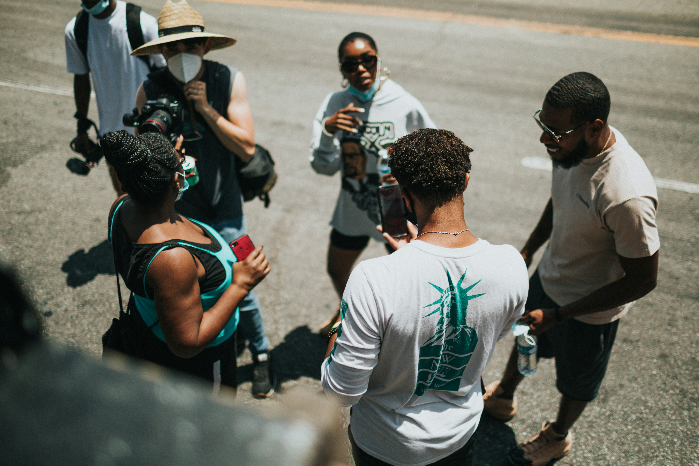

Volunteer Opportunities
We are always looking for passionate individuals to join our volunteer team. Whether you have experience in film production or are just starting out, there are opportunities for everyone.
How to Apply
To apply, please fill out our volunteer application form. We will review your application and get back to you with more information about available positions and upcoming events. Volunteer opportunities include:
- Concessions
Help us serve food and drinks at our film screenings and events.
- Ushers
Assist with seating and ensuring a smooth experience for our audience members.
- Event Setup
Help us set up and take down equipment, decorations, and other materials for our events.
- Marketing and Promotion
Assist with social media, email campaigns, and other marketing efforts to promote our events and initiatives.
- Film Festival Support
Join our team for the Indie Film Festival and help with various tasks, including ticketing, guest services, and more.
